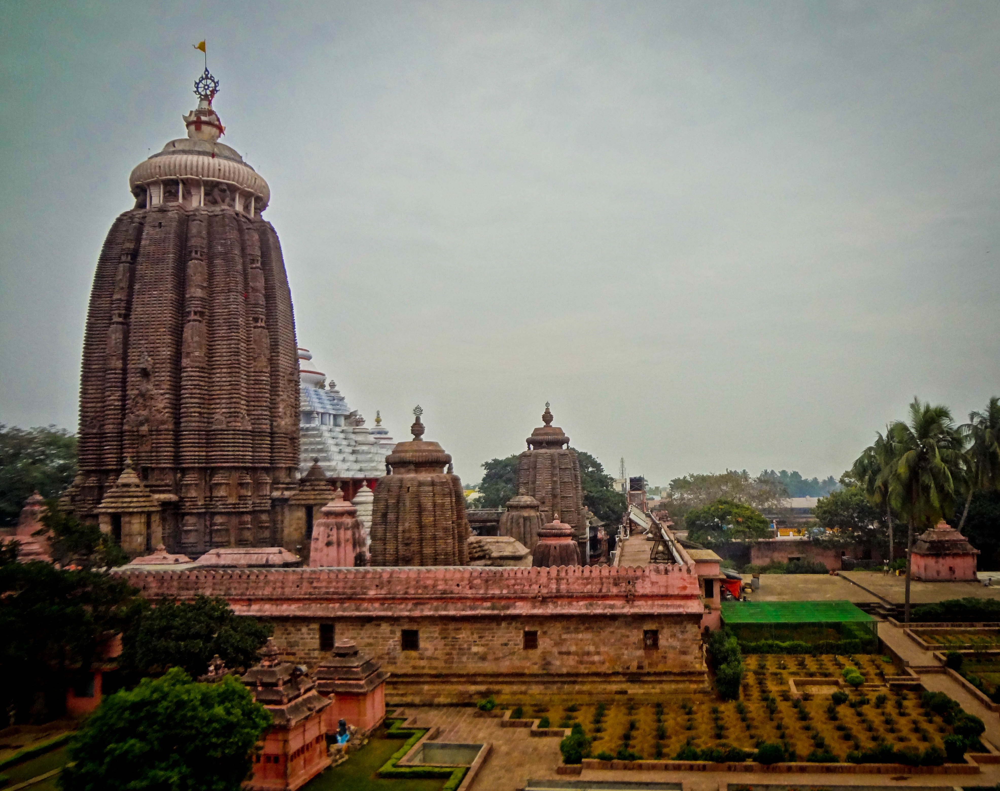

Sacred Hindu temple dedicated to Lord Jagannath in Puri, Odisha
The Puri Jagannath Temple, located in the coastal town of Puri in the state of Odisha, India, is one of the most sacred Hindu temples dedicated to Lord Jagannath, a form of Lord Vishnu. The temple is famous for its annual Rath Yatra, where the deities of Lord Jagannath, Lord Balabhadra, and Devi Subhadra are carried in grand chariots through the streets of Puri. The temple complex is a significant pilgrimage destination for Hindus, attracting devotees from all over the world.
The Puri Jagannath Temple is an architectural marvel, built in the Kalinga style of architecture. The main temple structure, known as the sanctum sanctorum or the Garbhagriha, houses the idols of Lord Jagannath (Krishna), Lord Balabhadra (Balarama), and Devi Subhadra. The temple is adorned with intricate carvings and sculptures depicting various mythological themes and religious motifs, reflecting the rich cultural heritage of Odisha.
The temple is considered extremely sacred by Hindus, especially followers of the Vaishnavism tradition. It is believed that a pilgrimage to the Puri Jagannath Temple is equivalent to visiting all the major pilgrimage sites in India. The annual Rath Yatra festival, where millions of devotees participate, is a celebration of the divine journey of the deities to their aunt's temple and back. The temple rituals and ceremonies are performed by a distinct group of Brahmin priests known as pandas.
The Puri Jagannath Temple is renowned for its elaborate rituals and festivals. Apart from the Rath Yatra, other important festivals celebrated here include Snana Yatra (bathing ceremony), Chandan Yatra (sandalwood paste festival), and Niladri Bije (return of the deities to the temple). These festivals attract large crowds of devotees who come to witness and participate in the religious ceremonies.
The temple complex is not only a center of religious worship but also a hub of art and culture. The temple's architecture, sculptures, and paintings depict stories from Hindu mythology and showcase the artistic skills of Odishan artisans. The temple administration also supports various cultural programs, music concerts, and dance performances that promote the region's cultural heritage.